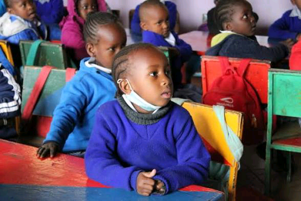
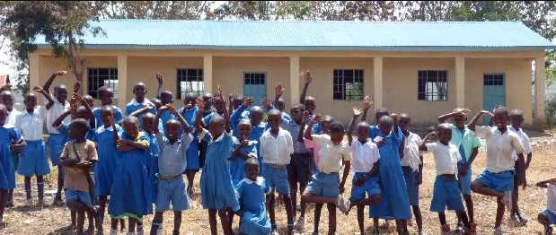
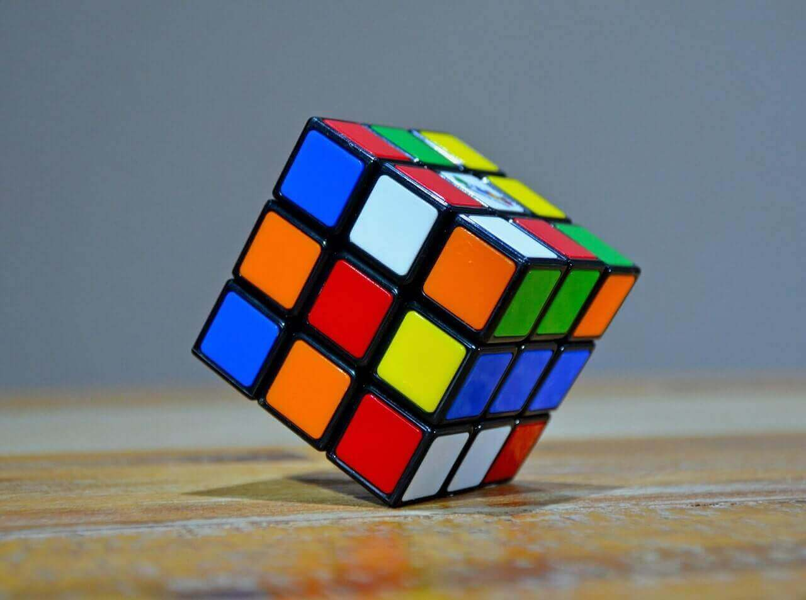
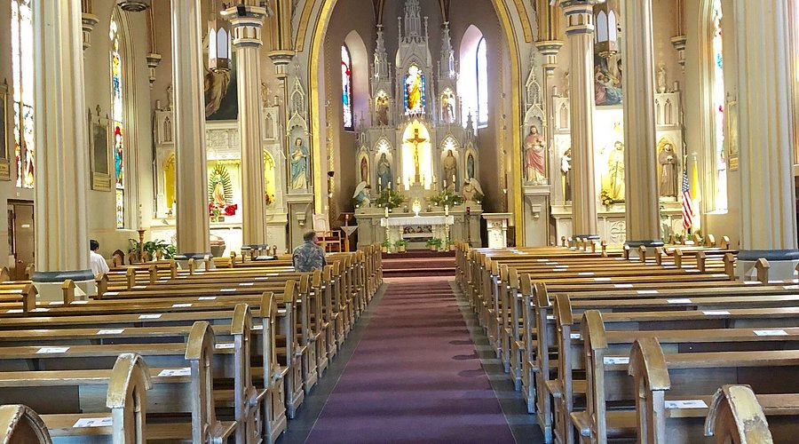

Student | Web Developer | Football Enthusiast|
Welcome to my digital space. I am Eltone Lucas, a dedicated professional Web Developer specializing in both Frontend and Backend Web Development. My mission is to bridge the gap between complex computet language concepts and modern, engaging learning experiences. Beyond the classroom, I am a passionate coder and digital creator, constantly exploring the intersection of education, technology, and visual storytelling.This Profile Portfolio contain;


My educational journey began in 2011 when I joined Early Childhood Development Education (ECDE) at Nyamanga Disii Primary School. This marked the beginning of an important chapter in my life, where I developed the foundation of my academic, social, and personal growth.
Throughout my years in primary school, I remained committed to learning and actively participated in various school activities. The school environment nurtured my curiosity, discipline, leadership skills, and determination to succeed. During my time at Nyamanga Disii Primary School, I had the privilege of serving as the School President, a role that helped me develop responsibility, confidence, and leadership abilities.
After years of hard work, perseverance, and dedication, I successfully completed my primary education in 2022. I sat for the Kenya Certificate of Primary Education (KCPE) examination and achieved an impressive score of 383 marks. This accomplishment opened the door to the next stage of my academic journey and remains one of the proud milestones in my educational life.
Looking back, my primary school years were filled with valuable lessons, memorable experiences, lasting friendships, and personal growth that continue to shape who I am today.
My secondary school journey began on 5th May 2022 when I joined Kanga High School, one of the leading academic institutions in Migori County. Stepping into high school marked a new phase of growth, learning, and self-discovery as I prepared for greater academic and personal challenges.
Throughout my four years at Kanga High School, I embraced the opportunities and responsibilities that came with secondary education. I worked diligently in my studies, participated in school activities, and developed valuable skills in leadership, teamwork, discipline, and critical thinking. I was a member of Victor Class, a class of 58 students, under the guidance of our class teacher, Mr. Odoyo Wycliffe (Ochieng Nyando).
In addition to academics, I served as the Deputy Geography Club Chairperson, a leadership role that allowed me to contribute to the school's co-curricular activities while strengthening my organizational and communication skills.
My high school experience was shaped by the support of dedicated teachers, including our principal, Dr. Reuben Kodiango, PhD, whose leadership fostered a culture of excellence and ambition. The friendships, lessons, challenges, and achievements I encountered during these years helped shape my character and prepared me for the future.
On 21st November 2025, I successfully completed my secondary school education. I later sat for the Kenya Certificate of Secondary Education (KCSE) examination and attained an A- (Minus) grade with 79 points, a significant achievement that reflected my hard work, determination, and commitment to academic excellence.
As I look ahead to university and future opportunities, I remain grateful for the experiences and knowledge gained during my time at Kanga High School, which continue to inspire my pursuit of success and lifelong learning.

This is My Favorite Hobby.As an upcoming Web Developer, I spend the better part of my day learning Frontend web languages like HTML,CSS and JAVASCRIPT.From there i'll upgrade to backend languages like PHP and SQL.This Personal web portfolio is purely my work.
My second hobby is football. Im both a fan a football player. I had played for Nyamanga U15. I am a fan of different Football Clubs and National Teams.See More In Football Section
I sometimes pass time by watching TV programmes,series & movies. My top TV programmes are Nat Geo Wild, Football, both live and replay matches and Daily News. I do watch series and Movies. The Day Of Jackal Is My Top Series.

I play both physical and computer games/puzzle. My best is Rubiks Cube Solving. I also play eFootball and Call Of Duty.

Wellness and fitness philosophy.
Stats, analysis, and passion for the sport.
Experience and roles held.
Where to find me.
Get in touch with me directly.